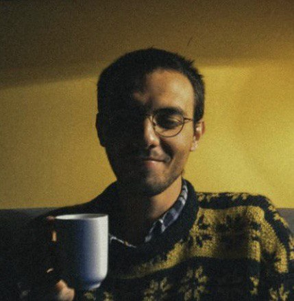

<meta charset="UTF-8">
<meta name="viewport" content="width=device-width, initial-scale=1.0">
<title>Lorenzo Maniscalco — Mathematician</title>
<meta name="description" content="Lorenzo Maniscalco, PhD candidate in Mathematics at Università degli Studi di Torino. Research in geometric analysis, elliptic PDEs, spacelike hypersurfaces in Lorentzian manifolds, prescribed mean curvature.">
<meta name="author" content="Lorenzo Maniscalco">
<meta property="og:title" content="Lorenzo Maniscalco — Mathematician">
<meta property="og:description" content="PhD candidate at UniTO. Geometric analysis, elliptic PDEs, Lorentzian geometry.">
<meta property="og:type" content="website">
<link rel="preconnect" href="https://fonts.googleapis.com">
<link href="https://fonts.googleapis.com/css2?family=EB+Garamond:ital,wght@0,400;0,600;1,400&family=JetBrains+Mono:wght@400;500&family=Inter:wght@300;400;500&display=swap" rel="stylesheet">

<link rel="icon" type="image/x-icon" href="https://lorenzomaniscalco98.github.io/favicon.ico">

<style>
*,*::before,*::after{margin:0;padding:0;box-sizing:border-box}
:root{
  --bg:#0c0b09;--bg2:#141210;--bg3:#1c1a16;
  --amber:#c8890a;--amber2:#dfa830;
  --text:#ddd4be;--muted:#7a7060;--border:#252018;
  --mono:'JetBrains Mono',monospace;
  --serif:'EB Garamond',Georgia,serif;
  --sans:'Inter',system-ui,sans-serif;
}
html{scroll-behavior:smooth}
body{background:var(--bg);color:var(--text);font-family:var(--sans);font-size:15px;line-height:1.75}

nav{position:fixed;top:0;left:0;right:0;height:52px;background:rgba(12,11,9,.95);backdrop-filter:blur(12px);border-bottom:1px solid var(--border);z-index:999;display:flex;align-items:center;justify-content:space-between;padding:0 2rem}
.nav-brand{font-family:var(--serif);font-size:1.05rem;color:var(--amber);text-decoration:none;letter-spacing:.02em}
.nav-links{display:flex;gap:1.5rem;list-style:none}
.nav-links a{font-size:.7rem;letter-spacing:.1em;text-transform:uppercase;color:var(--muted);text-decoration:none;transition:color .2s}
.nav-links a:hover,.nav-links a.active{color:var(--amber)}

.wrap{max-width:840px;margin:0 auto;padding:0 2rem}
section{padding:5rem 0}
section+section{border-top:1px solid var(--border)}

.lbl{font-family:var(--mono);font-size:.68rem;letter-spacing:.15em;text-transform:uppercase;color:var(--amber);margin-bottom:.5rem}
.sec-h{font-family:var(--serif);font-size:2rem;font-weight:400;margin-bottom:2.5rem;line-height:1.2}

/* HERO */
#hero{padding-top:9rem;padding-bottom:5rem;border-bottom:1px solid var(--border)}
.hero-inner{display:flex;align-items:flex-start;justify-content:space-between;gap:3rem}
.hero-text{flex:1;min-width:0}
.eyebrow{font-family:var(--mono);font-size:.7rem;letter-spacing:.15em;text-transform:uppercase;color:var(--amber);margin-bottom:1rem}
.hero-name{font-family:var(--serif);font-size:clamp(3rem,6vw,4.4rem);font-weight:400;line-height:1.05;margin-bottom:1.2rem}
.badge{display:inline-flex;align-items:center;gap:.5rem;background:var(--bg3);border:1px solid var(--border);border-left:2px solid var(--amber);padding:.45rem 1rem;border-radius:3px;font-size:.8rem;color:var(--muted);margin-bottom:2rem}
.badge strong{color:var(--text);font-weight:500}
.hero-desc{font-size:.95rem;color:var(--muted);max-width:520px;line-height:1.85;margin-bottom:2rem}
.hero-desc em{color:var(--amber);font-style:normal}
.hero-links{display:flex;gap:.7rem;flex-wrap:wrap}
.btn{display:inline-flex;align-items:center;gap:.35rem;padding:.4rem .95rem;border-radius:3px;font-size:.75rem;letter-spacing:.04em;font-family:var(--mono);text-decoration:none;transition:all .2s;cursor:pointer;border:none}
.btn-a{background:var(--amber);color:#0c0b09;font-weight:500}.btn-a:hover{background:var(--amber2)}
.btn-o{border:1px solid var(--border);color:var(--muted);background:transparent}.btn-o:hover{border-color:var(--amber);color:var(--amber)}
.open-box{margin-top:2rem;background:var(--bg3);border:1px solid var(--border);border-left:3px solid var(--amber);padding:.9rem 1.2rem;border-radius:3px;display:flex;align-items:center;gap:.8rem;max-width:480px}
.open-dot{width:8px;height:8px;border-radius:50%;background:var(--amber);flex-shrink:0;animation:pulse 2s infinite}
@keyframes pulse{0%,100%{opacity:1;transform:scale(1)}50%{opacity:.5;transform:scale(.8)}}
.open-text{font-size:.82rem;color:var(--muted)}.open-text strong{color:var(--text)}

/* PHOTO */
#photo-input{display:none}
.avatar-wrap{flex-shrink:0;cursor:pointer;display:flex;flex-direction:column;align-items:center;gap:.5rem}
.avatar-wrap:hover .av-placeholder{background:var(--bg2);border-color:var(--amber2)}
.av-placeholder{width:200px;height:240px;border-radius:8px;border:2px dashed rgba(200,137,10,.5);background:var(--bg3);display:flex;flex-direction:column;align-items:center;justify-content:center;gap:.6rem;transition:all .2s}
.av-initials{font-family:var(--serif);font-size:2.2rem;color:var(--amber)}
.av-label{font-size:.65rem;font-family:var(--mono);color:var(--muted);letter-spacing:.06em}
#av-img{width:200px;height:240px;border-radius:8px;border:2px solid var(--amber);object-fit:cover;display:none;filter:sepia(.5) saturate(1.5) hue-rotate(-8deg) brightness(.92)}
.av-hint{font-size:.63rem;font-family:var(--mono);color:var(--muted);letter-spacing:.05em}

@media(max-width:620px){
  .nav-links{display:none}
  .hero-inner{flex-direction:column}
  .av-placeholder,#av-img{width:140px;height:170px}
}

/* RESEARCH */
.r-grid{display:grid;grid-template-columns:repeat(auto-fit,minmax(200px,1fr));gap:1rem}
.r-card{background:var(--bg2);border:1px solid var(--border);border-top:2px solid var(--amber);padding:1.3rem;border-radius:3px}
.r-card h3{font-family:var(--serif);font-size:1rem;font-weight:400;margin-bottom:.4rem}
.r-card p{font-size:.8rem;color:var(--muted);line-height:1.6}

/* PUBLICATIONS */
.pub{display:grid;grid-template-columns:56px 1fr;gap:1rem;padding:1.5rem 0;border-bottom:1px solid var(--border)}
.yr{font-family:var(--mono);font-size:.72rem;color:var(--amber);padding-top:.1rem}
.pub-title{font-family:var(--serif);font-size:1.05rem;font-weight:400;margin-bottom:.3rem;line-height:1.35}
.pub-auth{font-size:.78rem;color:var(--muted);margin-bottom:.5rem}
.pub-auth b{color:var(--text);font-weight:500}
.arxiv{display:inline-block;padding:.16rem .5rem;border-radius:2px;font-size:.67rem;font-family:var(--mono);background:rgba(200,137,10,.1);color:var(--amber);border:1px solid rgba(200,137,10,.2);text-decoration:none;transition:background .2s}
.arxiv:hover{background:rgba(200,137,10,.22)}

/* TALKS */
.talk{display:grid;grid-template-columns:108px 1fr;gap:1rem;padding:1.1rem 0;border-bottom:1px solid var(--border);align-items:start}
.t-date{font-family:var(--mono);font-size:.68rem;color:var(--muted);padding-top:.1rem;line-height:1.5}
.t-title{font-size:.9rem;font-weight:500;margin-bottom:.15rem;color:var(--text)}
.t-venue{font-size:.78rem;color:var(--muted);font-style:italic;margin-bottom:.4rem}
.sl-btn{display:inline-flex;align-items:center;gap:.3rem;padding:.18rem .55rem;border-radius:2px;font-size:.67rem;font-family:var(--mono);text-decoration:none;transition:all .2s;border:1px solid}
.sl-on{background:rgba(200,137,10,.1);color:var(--amber);border-color:rgba(200,137,10,.28)}.sl-on:hover{background:rgba(200,137,10,.22)}
.sl-off{background:transparent;color:var(--muted);border-color:var(--border);pointer-events:none;opacity:.5}

/* TIMELINE */
.tl{display:grid;grid-template-columns:108px 1fr;gap:1rem;padding:1.1rem 0;border-bottom:1px solid var(--border)}
.tl-per{font-family:var(--mono);font-size:.68rem;color:var(--muted);padding-top:.1rem;line-height:1.5}
.tl-role{font-size:.9rem;font-weight:500;margin-bottom:.15rem}
.tl-place{font-size:.8rem;color:var(--muted)}
.tl-sub{font-size:.77rem;color:var(--muted);font-style:italic;margin-top:.15rem}

/* CONTACT */
.c-grid{display:grid;grid-template-columns:1fr 1fr;gap:2.5rem}
.c-line{display:flex;align-items:flex-start;gap:.6rem;font-size:.83rem;color:var(--muted);margin-bottom:.7rem}
.c-line a{color:var(--amber);text-decoration:none}.c-line a:hover{text-decoration:underline}
.ref-c{background:var(--bg2);border:1px solid var(--border);padding:1.1rem;border-radius:3px;margin-bottom:.7rem}
.ref-n{font-weight:500;font-size:.88rem;margin-bottom:.2rem}
.ref-i{font-size:.76rem;color:var(--muted);margin-bottom:.2rem}
.ref-m{font-size:.74rem;font-family:var(--mono)}.ref-m a{color:var(--amber);text-decoration:none}

footer{padding:1.8rem 2rem;text-align:center;font-size:.68rem;color:var(--muted);border-top:1px solid var(--border);font-family:var(--mono)}

@media(max-width:620px){
  .pub,.talk,.tl,.c-grid{grid-template-columns:1fr}
}
</style>

<nav>
  <a href="#hero" class="nav-brand">L. Maniscalco</a>
  <ul class="nav-links">
    <li><a href="#research">Research</a></li>
    <li><a href="#publications">Publications</a></li>
    <li><a href="#talks">Talks</a></li>
    <li><a href="#education">Education</a></li>
    <li><a href="#teaching">Teaching</a></li>
    <li><a href="#contact">Contact</a></li>
  </ul>
</nav>

<main>

<section id="hero">
<div class="wrap">
  <input type="file" id="photo-input" accept="image/*">
  <div class="hero-inner">

    <div class="hero-text">
      <div class="eyebrow">PhD Candidate · Mathematics</div>
      <h1 class="hero-name">Lorenzo<br>Maniscalco</h1>
      <div class="badge">⬡ &nbsp;Dipartimento di Matematica · <strong>Università degli Studi di Torino</strong></div>
      <p class="hero-desc">
        Working in <em>geometric analysis</em> and <em>elliptic PDEs</em>, with focus on
        spacelike hypersurfaces in Lorentzian manifolds,
        <em>prescribed mean curvature problems</em>, and capillary boundary conditions.
        Expected thesis defense: <em>November 2026</em>.
      </p>
      <div class="hero-links">
        <a href="mailto:lorenzo.maniscalco@unito.it" class="btn btn-a">✉ Email</a>
        <a href="https://arxiv.org/a/maniscalco_l_1.html" target="_blank" class="btn btn-o">arXiv ↗</a>
        <a href="https://www.mathphd.unito.it/do/studenti.pl/Show?_id=866420#profilo" target="_blank" class="btn btn-o">Webpage ↗</a>
        <a href="https://lorenzomaniscalco98.github.io/curriculum.pdf" class="btn btn-o">CV PDF ↗</a>
      </div>
      <div class="open-box">
        <div class="open-dot"></div>
        <div class="open-text"><strong>Open to postdoctoral positions</strong> in geometric analysis, Europe — 2026/27</div>
      </div>
    </div>

    <div class="avatar-wrap">
      
    </div>

  </div>
</div>
</section>

<section id="research">
<div class="wrap">
  <div class="lbl">01 · Research</div>
  <h2 class="sec-h">Research Interests</h2>
  <div class="r-grid">
    <div class="r-card"><h3>Lorentzian Geometry</h3><p>Spacelike hypersurfaces in Lorentzian manifolds and Minkowski space; achronal hypersurfaces; light cone asymptotics.</p></div>
    <div class="r-card"><h3>Prescribed Mean Curvature</h3><p>Existence and regularity for PMC equations; singular mean curvature as a measure; Born–Infeld electrodynamics.</p></div>
    <div class="r-card"><h3>Capillary Boundaries</h3><p>Variational structure; natural boundary conditions; Bernstein-type results; capillary hypersurfaces in half-spaces.</p></div>
    <div class="r-card"><h3>Elliptic PDE Theory</h3><p>Divergence-form quasilinear equations; gradient estimates; Moser iteration; Sobolev and trace inequalities.</p></div>
  </div>
</div>
</section>

<section id="publications">
<div class="wrap">
  <div class="lbl">02 · Publications</div>
  <h2 class="sec-h">Publications</h2>
  <div class="pub">
    <div class="yr">2026</div>
    <div>
      <div class="pub-title">Entire spacelike radial graphs with prescribed mean curvature in the Lorentz–Minkowski space</div>
      <div class="pub-auth">G. Cora, A. Iacopetti, and <b>L. Maniscalco</b></div>
      <a href="https://arxiv.org/abs/2605.06409" target="_blank" class="arxiv">arXiv:2605.06409</a>
    </div>
  </div>
  <div class="pub">
    <div class="yr">2025</div>
    <div>
      <div class="pub-title">Prescribing the mean curvature of an achronal hypersurface as a measure: the case of 3D spacetimes</div>
      <div class="pub-auth"><b>L. Maniscalco</b> and L. Mari</div>
      <a href="https://arxiv.org/abs/2512.17670" target="_blank" class="arxiv">arXiv:2512.17670</a>
    </div>
  </div>
</div>
</section>

<section id="talks">
<div class="wrap">
  <div class="lbl">03 · Talks</div>
  <h2 class="sec-h">Talks &amp; Seminars</h2>
  <div class="talk"><div class="t-date">Apr 27, 2026</div><div><div class="t-title">Where electrodynamics meets Lorentzian geometry: the Born–Infeld equation</div><div class="t-venue">Insalate di Matematica · Università Milano Bicocca, Milan</div><a href="https://lorenzomaniscalco98.github.io/Bicocca_short.pdf" target="_blank" class="sl-btn sl-on">📄 Slides</a></div></div>
  <div class="talk"><div class="t-date">Jan 20, 2026</div><div><div class="t-title">Born–Infeld electrodynamics and spacelike hypersurfaces with singular mean curvature</div><div class="t-venue">PDEs at Grand Paradis · Cogne, Italy</div><a href="https://lorenzomaniscalco98.github.io/cogne_short.pdf" target="_blank" class="sl-btn sl-on">📄 Slides</a></div></div>
  <div class="talk"><div class="t-date">Dec 1, 2025</div><div><div class="t-title">On the mean curvature of spacelike hypersurfaces asymptotic to a light cone</div><div class="t-venue">Séminaire de clôture "PDEs in interactions" · Université Libre de Bruxelles, Spa</div><a href="https://lorenzomaniscalco98.github.io/Spa_short.pdf" target="_blank" class="sl-btn sl-on">📄 Slides</a></div></div>
  <div class="talk"><div class="t-date">Apr 16, 2025</div><div><div class="t-title">Prescribing mean curvature in Lorentzian geometry</div><div class="t-venue">PhD Days · Università di Milano</div><a href="#" class="sl-btn sl-off">📄 Slides</a></div></div>
  <div class="talk"><div class="t-date">Feb 26, 2025</div><div><div class="t-title">Spacelike hypersurfaces with singular mean curvature</div><div class="t-venue">Seminario MAP · Scuola Normale Superiore, Pisa</div></div></div>
  <div class="talk"><div class="t-date">Feb 19, 2025</div><div><div class="t-title">Lorentzian geometry and non-linear electrodynamics</div><div class="t-venue">Seminario del Dottorato · Università di Torino</div></div></div>
</div>
</section>

<section id="education">
<div class="wrap">
  <div class="lbl">04 · Education</div>
  <h2 class="sec-h">Education</h2>
  <div class="tl"><div class="tl-per">2023–present</div><div><div class="tl-role">PhD in Mathematics</div><div class="tl-place">Università degli Studi di Torino</div><div class="tl-sub">Supervisors: L. Mari (UniMI) &amp; A. Iacopetti (UniTO) · Defense: Nov 2026</div></div></div>
  <div class="tl"><div class="tl-per">2021–2023</div><div><div class="tl-role">Master in Mathematics</div><div class="tl-place">Università degli Studi di Torino</div><div class="tl-sub">Thesis: Existence and regularity for spacelike hypersurfaces with prescribed mean curvature</div></div></div>
  <div class="tl"><div class="tl-per">2019–2023</div><div><div class="tl-role">Bachelor in Mathematics</div><div class="tl-place">Università degli Studi di Torino</div><div class="tl-sub">Thesis: Il teorema della mappa di Riemann</div></div></div>
</div>
</section>

<section id="teaching">
<div class="wrap">
  <div class="lbl">05 · Teaching</div>
  <h2 class="sec-h">Teaching Assistantship</h2>
  <div class="tl"><div class="tl-per">Spring 2026</div><div><div class="tl-role">Geometria 1</div><div class="tl-place">Bachelor in Mathematics · UniTO · 32h</div></div></div>
  <div class="tl"><div class="tl-per">Fall 2024</div><div><div class="tl-role">Algebra 1</div><div class="tl-place">Bachelor in Mathematics · UniTO · 50h</div></div></div>
  <div class="tl"><div class="tl-per">Fall 2023</div><div><div class="tl-role">Meccanica Razionale &amp; Geometria e Algebra Lineare 1</div><div class="tl-place">Bachelor in Mathematics / Physics · UniTO · 50h + 75h</div></div></div>
  <div class="tl"><div class="tl-per">Spring 2023</div><div><div class="tl-role">Algebra 1</div><div class="tl-place">Bachelor in Mathematics · UniTO · 50h</div></div></div>
  <div class="tl"><div class="tl-per">Fall 2022</div><div><div class="tl-role">Geometria 2</div><div class="tl-place">Bachelor in Mathematics · UniTO · 50h</div></div></div>
</div>
</section>

<section id="contact">
<div class="wrap">
  <div class="lbl">06 · Contact</div>
  <h2 class="sec-h">Contact</h2>
  <div class="c-grid">
    <div>
      <div class="c-line">✉&nbsp;<a href="mailto:lorenzo.maniscalco@unito.it">lorenzo.maniscalco@unito.it</a></div>
      <div class="c-line">🏛&nbsp;Dipartimento di Matematica<br>Università degli Studi di Torino</div>
      <div class="c-line">📄&nbsp;<a href="#">CV (PDF)</a></div>
      <div class="c-line">🔗&nbsp;<a href="#">arXiv profile</a></div>
    </div>
    <div>
      <p style="font-size:.78rem;color:var(--muted);margin-bottom:1rem;font-family:var(--mono);letter-spacing:.03em">REFERENCES</p>
      <div class="ref-c"><div class="ref-n">Prof. Luciano Mari</div><div class="ref-i">Università degli Studi di Milano · Dip. di Matematica</div><div class="ref-m"><a href="mailto:luciano.mari@unimi.it">luciano.mari@unimi.it</a></div></div>
      <div class="ref-c"><div class="ref-n">Prof. Alessandro Iacopetti</div><div class="ref-i">Università degli Studi di Torino · Dip. di Matematica</div><div class="ref-m"><a href="mailto:alessandro.iacopetti@unito.it">alessandro.iacopetti@unito.it</a></div></div>
    </div>
  </div>
</div>
</section>

</main>

<footer>Lorenzo Maniscalco · Università degli Studi di Torino · 2026</footer>

<script>
document.getElementById('photo-input').addEventListener('change', e => {
  const f = e.target.files[0];
  if (!f) return;
  const r = new FileReader();
  r.onload = ev => {
    const img = document.getElementById('av-img');
    img.src = ev.target.result;
    img.style.display = 'block';
    document.getElementById('av-placeholder').style.display = 'none';
  };
  r.readAsDataURL(f);
});

const secs = document.querySelectorAll('section[id]');
const links = document.querySelectorAll('.nav-links a');
window.addEventListener('scroll', () => {
  let cur = '';
  secs.forEach(s => { if (window.scrollY >= s.offsetTop - 80) cur = s.id });
  links.forEach(a => a.classList.toggle('active', a.getAttribute('href') === '#' + cur));
});
</script>
